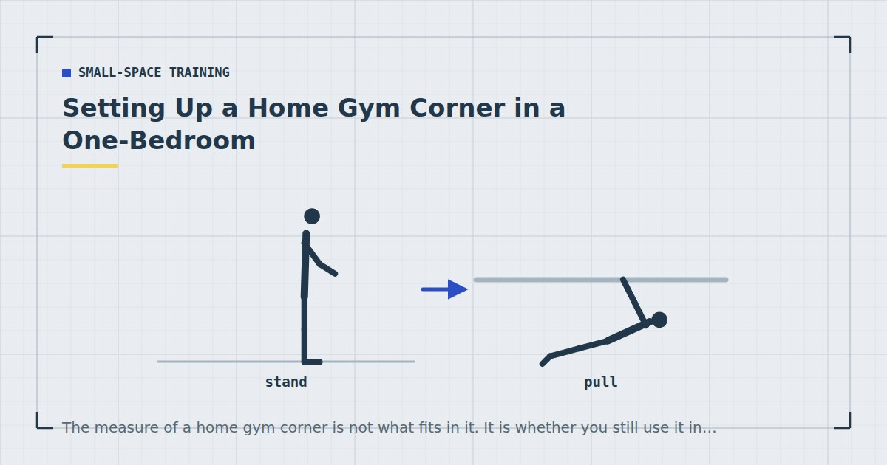

Small-Space Training
Setting Up a Home Gym Corner in a One-Bedroom
The measure of a home gym corner is not what fits in it. It is whether you still use it in week six, which is mostly determined by how much setting up it requires.

Most advice about home gyms in small flats is about fitting things in. That is the wrong problem. The corner that works is not the one holding the most equipment — it is the one you can start training in within about fifteen seconds.
The principle: friction, not floor area
Every step between deciding to train and starting is a place the decision can be reversed. Moving a coffee table, fetching a mat from a cupboard, unpacking a bag, finding a band — each is small, and together they are the difference between a routine that survives a bad week and one that does not.
The corner exists to eliminate those steps. Which means a permanently available two-metre strip beats a larger space that requires clearing, every time.
This is not a productivity aphorism; it is the practical version of what makes habits stick, and it is covered properly in how to actually stick to a home workout habit.
Choosing the spot
Four criteria, in priority order.
1. It requires no clearing. The single most important factor. A worse spot you can use immediately beats a better spot you must prepare.
2. It is at least 2 metres by 1. That covers nearly everything except travelling movements — the per-exercise measurements are in how much floor space you need. A diagonal placement often fits where a square one does not.
3. It is near a supporting wall. Floors deflect least near their supports, so this reduces noise transmission for free if you live above someone.
4. It has a usable door frame nearby. For a pull-up bar or a band anchor, which is the one thing bodyweight training genuinely needs equipment for — see rows at home.
In a typical one-bedroom, the candidates are: the foot of the bed, the strip alongside it, the space in front of a sofa, or a hallway. Hallways are consistently underrated — usually the longest clear floor in the flat and almost never considered.
What actually goes in it
Four items cover nearly everything, and all four store flat or on a hook.
- A mat, left permanently down if possible. This is the anchor of the whole setup.
- Resistance bands, on a hook or in a small box. Solves the pulling problem and takes almost no space — see the resistance bands guide.
- A doorway pull-up bar, if a frame nearby suits it. Fit and safety in the doorway pull-up bar guide.
- One adjustable dumbbell or a loaded rucksack, for adding load once bodyweight variations run out.
That is it. The buying order and the reasoning are in the minimalist home gym guide. Anything beyond this list should earn its floor area against the cost of the room feeling like a gym.
Laying it out
Mat down, oriented lengthways along the longest available dimension. If it must be rolled, roll it and stand it in the corner rather than putting it in a cupboard — visible storage is lower friction than tidy storage.
Everything else on a hook or in one box within arm's reach of the mat. One container, not several.
Leave a clear line to the door frame you use for rows and pull-ups, so moving between floor and pulling work needs no rearranging.
Keep a towel there permanently. Trivial, and it removes one more trip.
Visible storage beats tidy storage. A mat standing in the corner gets used; a mat in a cupboard becomes a decision.
Keeping it liveable
The honest tension in a one-bedroom is that the corner competes with living in the room. Three things that help.
Choose equipment that reads as furniture or disappears. A rolled mat standing in a corner is unobtrusive. A rack is not. This is a real reason to prefer bands over anything larger.
Take the pull-up bar down between sessions if it is in a doorway you use, but leave it somewhere in the same room. Removing it to another room adds a step back.
Accept a slightly worse spot for a much better experience of the room. A corner you resent is a corner you stop using. The storage side of this is covered in how to store home gym equipment in a tiny flat.
Four mistakes
1. Buying equipment before establishing the habit. Equipment does not create consistency. Spend two months training with nothing, then buy what you have actually missed.
2. Choosing a spot that needs clearing. It works for three weeks. It reliably stops working in week four.
3. Building for the programme you might do. Set the corner up for the training you actually do now — usually a full-body session two or three times a week, per the three-day split.
4. Treating the corner as the goal. Adult activity guidance asks for muscle-strengthening work on two or more days a week,1 and none of it requires a dedicated space. A corner reduces friction; it does not do the training.
Building it in three phases
The corner should grow with the habit rather than arriving fully formed, for the simple reason that a fully equipped corner used twice is a worse outcome than a bare mat used three times a week for a year.
Phase one, months one and two: a mat and nothing else. Establish that you train two or three times a week in that specific spot. Everything in a full-body session except pulling works with nothing, and the pulling can be covered temporarily by a towel on a door handle or rows under a table. Buy nothing during this phase — the purpose is to find out whether the spot and the schedule actually work before spending anything.
Phase two, month three: solve pulling properly. By now you will know whether the door frame nearby is suitable for a bar, or whether bands anchored in a hinge are the better answer. This is the one purchase that changes what is trainable rather than merely what is comfortable, which is why it comes first among the paid items.
Phase three, month six onward: add load. Only once bodyweight variations are genuinely running out, which for most people takes considerably longer than expected. An adjustable dumbbell or a weighted vest extends the runway on movements you have already mastered rather than adding new ones — the case is in can you build muscle with bodyweight only.
Each phase should follow evidence from the one before it rather than a plan made at the start. If phase one reveals that the corner never gets used because the light is bad or the room is cold, that is far cheaper to discover with a mat than with a rack.
Where to go next
For a full walkthrough in an even smaller space, see training in a studio flat. For what to buy and in what order, see the minimalist home gym guide.
Frequently asked questions
How much space do you need for a home gym corner?
About 2 metres by 1 covers nearly every home exercise except travelling movements. A diagonal placement often fits where a square one does not, and a hallway is frequently the longest clear floor in a flat.
What equipment do I need for a small home gym?
A mat, resistance bands, a doorway pull-up bar if a suitable frame is nearby, and one adjustable dumbbell or a loaded rucksack. All four store flat or on a hook, and together they cover essentially everything.
Where should I put a home gym in a one-bedroom flat?
Wherever requires no clearing before you can start. A worse spot you can use immediately beats a better spot you must prepare. Near a supporting wall helps with noise, and a usable door frame nearby covers the pulling pattern.
How do I stop a home gym taking over a small room?
Choose equipment that disappears — bands over racks, a rolled mat standing in a corner over anything bulky. Accept a slightly worse training spot in exchange for a room you still enjoy living in.
Should I buy equipment before I start training at home?
No. Equipment does not create consistency. Train with nothing for two months, then buy what you have actually found yourself missing — which for most people turns out to be something to pull against.
Sources and further reading
- World Health Organization. WHO Guidelines on Physical Activity and Sedentary Behaviour. 2020.
- NHS. Strength and Flex exercise plan.
- NHS. Physical activity guidelines for adults aged 19 to 64.
- MedlinePlus, U.S. National Library of Medicine. Exercise and Physical Fitness.
Comments
Comments are not enabled yet. Add a hosted comment embed (Disqus, Commento, Giscus) inside this container when you are ready.